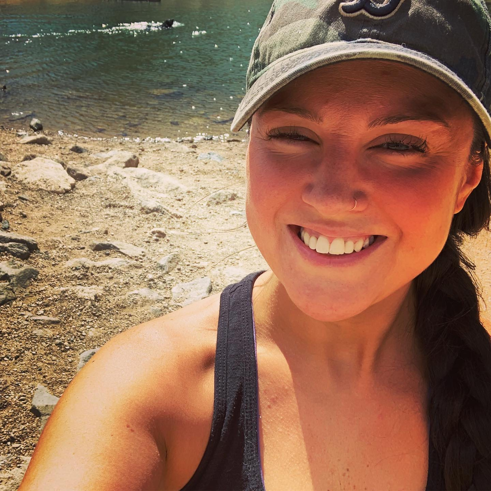

About Me
Born and raised in Rhode Island, I made the move to Denver, Colorado in July of 2019. Moving to Denver has been one of the best life decisions to date! It has allowed me to gain a new found independence and, along with that, a desire to explore a new career in the field of programming. Having worked for technology companies for the past 8 years in either an account management or business development capacity, I'm looking forward to exploring the world of coding and all of the opportunities that come with it!
When not learning to code, I enjoy exploring all that the awesome city of Denver/beautiful state of Colorado has to offer - hiking, kayaking, experiencing the food/beer scene and making new friends!